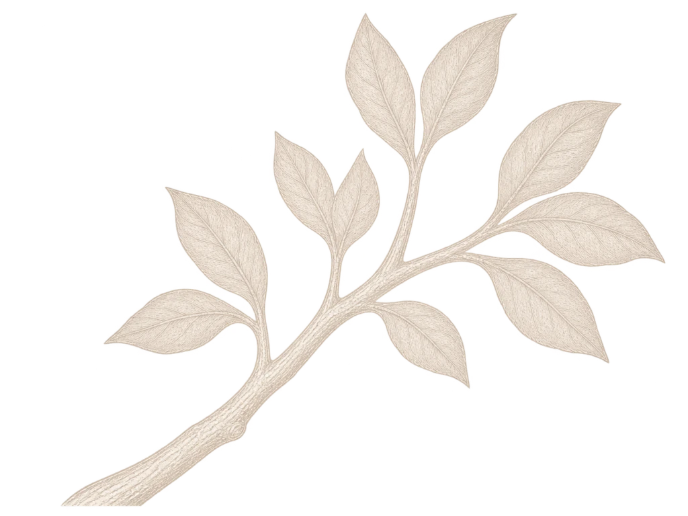
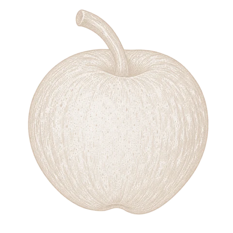
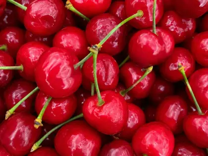
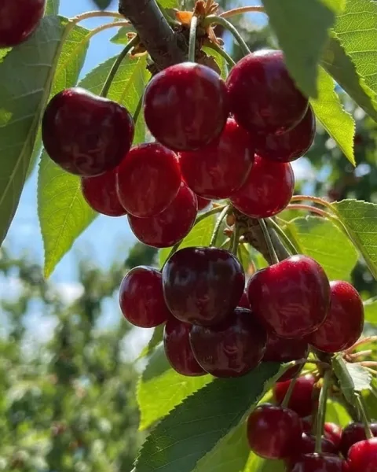
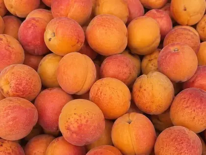
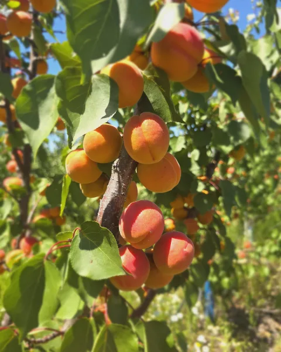
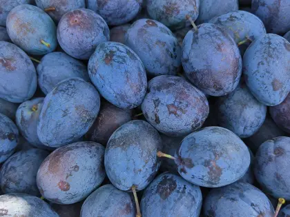
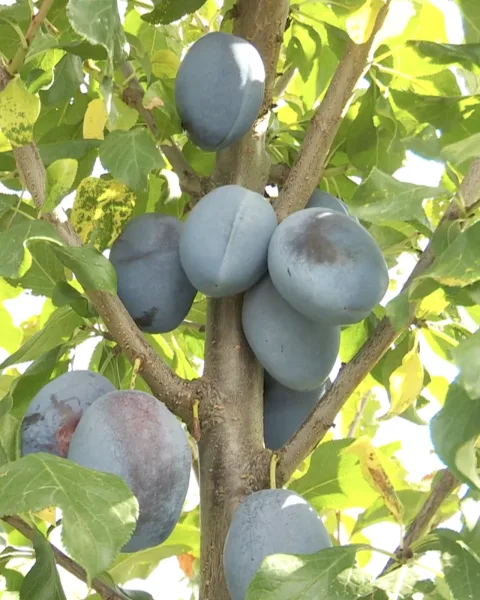
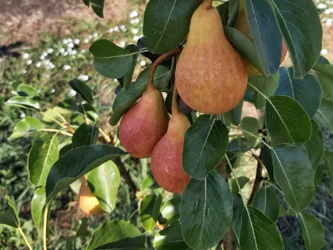
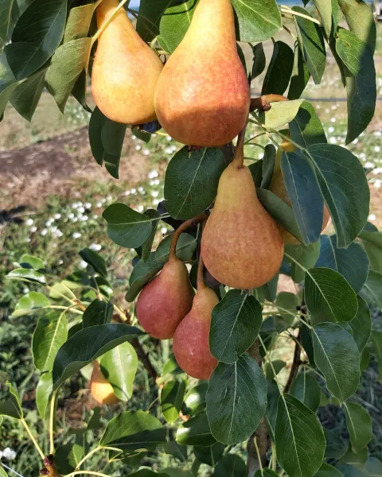

- 0 hectare de livadă
- 0 + Soiuri de pomi
- 0 hectare plantate anual


Fructele noastre aduc aminte de gustul copilariei.
Crescute pe dealul de la Brabova, culese la copt și trimise mai departe cât sunt încă proaspete.
Fructele noastre
-

Cireșe
Mai — Iunie
Primele care se culeg și primele care se termină. Se coc pe pom până la capăt, iar pielița crapă dacă mai stau o zi în plus, așa că sezonul lor se măsoară în zile, nu în săptămâni.


Din livadă, direct la tine.
Se mănâncă din ladă, înainte să apuce cineva să le spele. Cine a copilărit cu un cireș în curte le recunoaște gustul din prima; de aceea nu le culegem devreme, oricât ar fi de comod.
Cultivate cu grijă. Culese la timp.
- Mai
-
Începutul sezonului
Primele se colorează, dar rămân pe pom până se coc de tot.
-
Vârful recoltei
Se culege zilnic: pielița crapă dacă mai stau o zi.
- Iunie
-
Caise
Iunie — Iulie
Cultivăm mai multe soiuri moderne, cu pulpă fermă, gust dulce și aromă bogată. Nu se coc toate odată: fiecare soi ajunge la maturitate pe rând, prelungind firesc perioada de recoltare.


Fermitate bună, aromă deplină.
La maturitate, fructele îmbină portocaliul cu un roșu luminos. Pulpa rămâne fermă, dar este dulce și foarte aromată, iar caisele își păstrează bine calitatea în timpul transportului și la raft.
Pe cele coapte le recunoști după miros, înainte să le guști.
- Iunie
-
Coacere treptată
În cadrul fiecărui soi, caisele ajung la maturitate pe parcursul a șapte până la zece zile.
-
Soi după soi
Când se încheie recoltarea unui soi, următorul începe să se coacă.
- Iulie
-
Prune
Iunie — Octombrie
Vin cu bruma încă pe ele, stratul acela fin care se șterge dacă le atingi. Este semnul că nu au fost umblate după cules. Primul soi se coace la sfârșitul lui iunie, iar celelalte îi urmează succesiv până în octombrie.


Cu bruma încă pe ele.
Se coc târziu și se țin bine. Sunt singurele dintre cele patru care suportă un drum lung fără să-și piardă fermitatea, iar dulceața li se așază abia după câteva zile de odihnă.
Se coc târziu, se țin bine.
- Iunie
-
Se face bruma
Stratul fin se așază pe fruct și nu se mai atinge.
-
Culesul mare
Suportă drumul până la tine fără să-și piardă fermitatea.
- Octombrie
-
Pere
Iunie — Octombrie
Se culeg ferme și se lasă să se înmoaie singure, câteva zile, la temperatura camerei. Este singura parte pe care o lăsăm în seama celui care le savurează.


Gust bogat, aromă intensă.
Închid sezonul livezii, în octombrie, când ceilalți pomi sunt deja goi. Zeama se simte de la prima mușcătură; dacă nu curge pe mână, mai au nevoie de o zi.
Culese ferme. Coapte la tine acasă.
- Iunie
-
Primele soiuri
Ajung la maturitate în ultima săptămână din iunie, cu gust bogat și aromă intensă.
-
Ultimele soiuri
Încheie sezonul perelor în luna octombrie.
- Octombrie
Livada, filmată din dronă, în primăvara aceasta.
Întrebări frecvente
Ce ne întreabă cel mai des cei care ne caută după ce au gustat fructele.
-
Gustul diferă de la un soi la altul?
Da. Fiecare soi are gustul și aroma lui, iar perioada de coacere face și ea diferența. Soiurile care se culeg mai târziu petrec mai mult timp la soare și pot avea o aromă mai intensă.
-
Vreți să vă limitați la doar patru tipuri de fructe?
Nu. Avem în plan să extindem livada cu aproximativ zece hectare de vișini, piersici și nectarini.
-
De ce au fructele alt gust?
Fructele noastre sunt crescute aici, nu aduse din import, iar tratamentele sunt folosite doar când este nevoie. Le lăsăm să se coacă în pom și le culegem când sunt gata, nu înainte de vreme. Așa își păstrează gustul și aroma, iar multora le amintesc de fructele copilăriei.
-
Livrați și în afara județului Dolj?
Da. Livrăm în Dolj și în județele învecinate, inclusiv Vâlcea, Gorj și Argeș, precum și către depozite din București care distribuie fructele în toată țara. Colaborăm și cu operatori economici interesați să aducă fructele noastre mai aproape de consumatori.
-
Cum recunosc fructele Ferma Fruct în magazin?
Fiecare lădiță cu fructe livrată magazinelor are o etichetă cu datele firmei noastre, locația fermei și soiul fructelor.